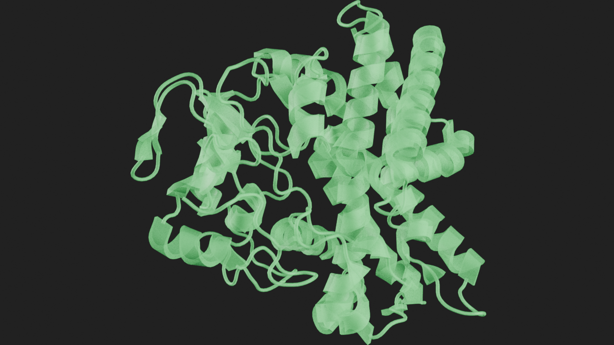
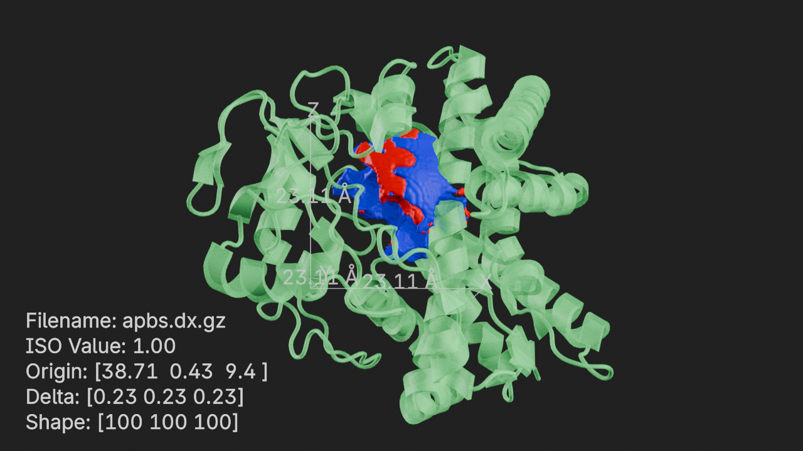
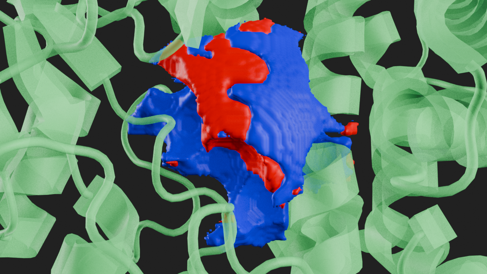
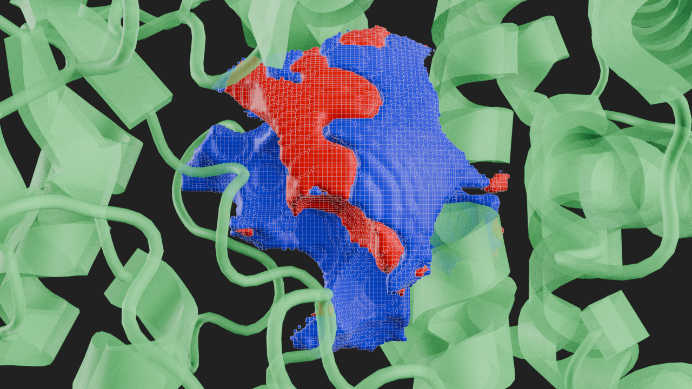
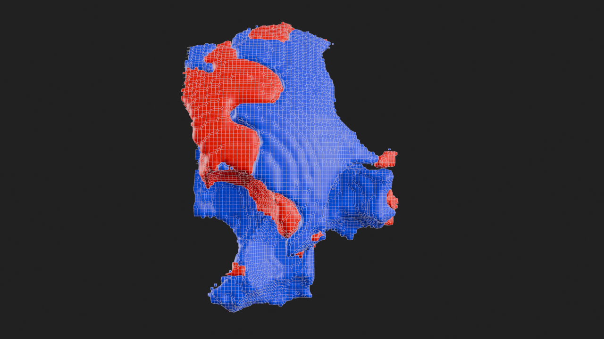
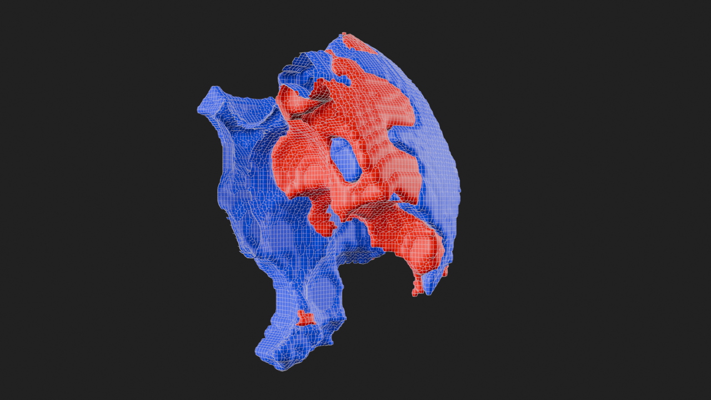
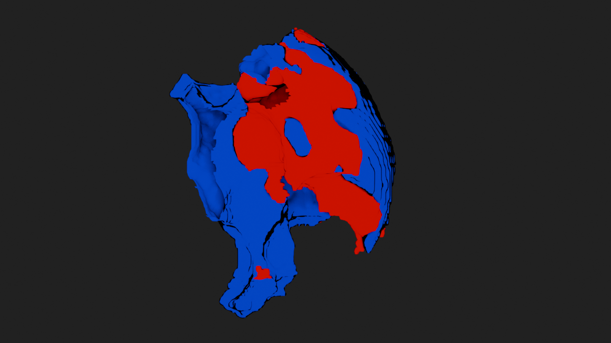
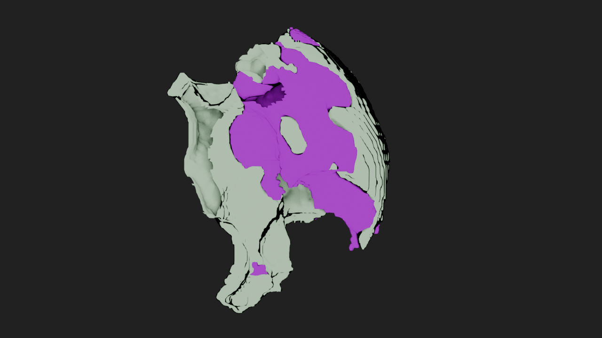

import molecularnodes as mn
# create a canvas object
canvas = mn.Canvas()Density
Examples of using the Density entity API
The Density entity can be used to load density grids into Blender. It uses MDAnalysis GridDataFormats library and supports a wide variety of formats.
Setup Molecular Nodes
Add 1EHE Molecule
# fetch 1EHE and add cartoon style with uniform color and transparency
mol = mn.Molecule.fetch("1EHE").add_style("cartoon", color=(0.2, 1.0, 0.3, 0.5))# frame molecule and render
canvas.frame_object(mol)
canvas.snapshot()
Add APBS density example
from pathlib import Path
apbs_sample = Path("../../") / "tests/data/apbs.dx.gz"
# load density file
d = mn.entities.density.io.load(
file_path=apbs_sample,
style="density_iso_surface",
overwrite=True,
)Set ISO Value
# get the density style
ds = d.styles[0]# set iso value
ds.iso_value = 1Show Density Grid and Info
# add density grid annotation
dg = d.annotations.add_grid_axes()
# add density info annotation
di = d.annotations.add_density_info()# frame molecule and render
canvas.frame_view(mol.get_view(), viewpoint="front")
canvas.snapshot()
# hide density grid and info
dg.visible = di.visible = FalseDensity View
# frame density and render
canvas.frame_view(d.get_view(), viewpoint="front")
canvas.snapshot()
ISO Value = 25
# set iso value
ds.iso_value = 25# frame density and render
canvas.frame_view(d.get_view(), viewpoint="front")
canvas.snapshot()
Contours
# reset ISO value to 1
ds.iso_value = 1# enable contours
ds.show_contours = True
# set contour thickness
ds.contour_thickness = 0.1
ds.contour_color = (1.0, 1.0, 1.0, 0.5)
# use ds.only_contours to only show contours# frame density and render
canvas.frame_view(d.get_view(), viewpoint="front")
canvas.snapshot()
Slicing
Density grids can be sliced from left, right, front, back, top and bottom as a percentage of the grid width along that direction.
# remove molecule style
mol.styles[0].remove()# slice the grid from the left 35%
ds.slice_left = 35# frame density and render
canvas.frame_view(d.get_view(), viewpoint="front")
canvas.snapshot()
Rotated View
# rotate camera 45 degress to left from front view
canvas.camera.rotation = (90, 0, -45)# frame density and render
canvas.frame_view(d.get_view())
canvas.snapshot()
Material
# disable contours
ds.show_contours = False# set material
ds.material = "MN Flat Outline"# frame density and render
canvas.frame_view(d.get_view())
canvas.snapshot()
Colors
# set color for positive ISO values
ds.positive_color = (0.7, 1.0, 0.7, 1.0)
# set color for negative ISO values
ds.negative_color = (0.7, 0.0, 1.0, 1.0)# frame density and render
canvas.frame_view(d.get_view())
canvas.snapshot()
Annotations
The bundled annotation types for Densities are:
density_info- For info about the density gridgrid_axes- For displaying the grid axeslabel_2d- For adding a generic 2d label in viewport / renderlabel_3d- For adding a generic 3d label
density_info
Display the density grid info.
The input parameters for this annotation are:
location- Normalized 2d location (0.0 - 1.0) to show the info wrt viewport / rendershow_filename- Whether to display the grid filenameshow_threshold- Whether to display the ISO valueshow_origin- Whether to display the origin coordinates of the gridshow_delta- Whether to display the grid lengths along the axesshow_shape- Whether to display the grid size along the axes
grid_axes
Display the grid axes.
The input parameters for this annotation are:
show_length- Whether to show the length of each axisunits- The units to display for the axis length
label_2d
Display a generic 2d label in the viewport / render.
The input parameters for this annotation are:
text- Text to displaylocation- Normalized location (0.0 - 1.0) to show the text wrt viewport / render
label_3d
Display a generic 3d label on the density grid.
The input parameters for this annotation are:
text- Text to displaylocation- 3d coordinates in grid to display text
Custom Annotations
A custom density annotation class has to extend DensityAnnotation and implement the draw method. Optional defaults method can be used to set defaults for the annotation and a validate method that can validate inputs when they change can be implemented. The custom class will have access to the density entity via self.density, the density grid object (Grid) via self.density.grid and the annotation params via self.interface. Please see the Annotations API for all the methods available to draw onto the viewport / renders from the draw code.